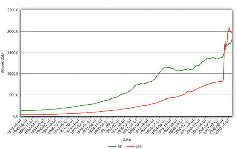
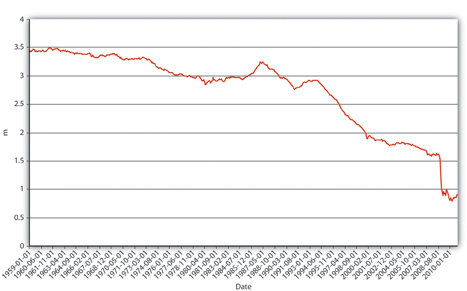
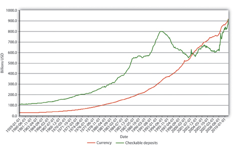
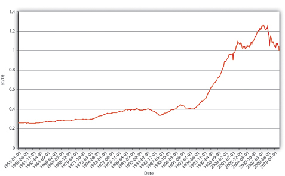

To review, an increase (decrease) in the monetary base (MB, which = C + R) leads to an even greater increase (decrease) in the money supply (MS, such as M1M1 is a measure of the money supply that includes currency in circulation plus checkable deposits. or M2M2 is a measure of the money supply that includes M1 plus time deposits and noninstitutional (retail) money market funds.) due to the multiple deposit creation process. In the previous section, you also learned a simple but unrealistic upper-bound formula for estimating the change that assumed that banks hold no excess reserves and that the public holds no currency.
You are a research associate for Moody’s subsidiary, High Frequency Economics, in West Chester, Pennsylvania. A client wants you to project changes in M1 given likely increases in the monetary base. Because of a glitch in the Federal Reserve’s computer systems, currency, deposit, and excess reserve figures will not be available for at least one week. A private firm, however, can provide you with good estimates of changes in banking system reserves, and of course the required reserve ratio is well known. What equation can you use to help your client? What are the equation’s assumptions and limitations?
You cannot use the more complex M1 money multiplier this week because of the Fed’s computer glitch, so you should use the simple deposit multiplier from Chapter 15 "The Money Supply Process and the Money Multipliers": ΔD = (1/rr) × ΔR. The equation provides an upper-bound estimate for changes in deposits. It assumes that the public will hold no more currency and that banks will hold no increased excess reserves.
To get a more realistic estimate, we’ll have to do a little more work. We start with the observation that we can consider the money supply to be a function of the monetary base times some money multiplier (m):
This is basically a broader version of the simple multiplier formula discussed in the previous section, except that instead of calculating the change in deposits (ΔD) brought about by the change in reserves (ΔR), we will now calculate the change in the money supply (ΔMS) brought about by the change in the monetary base (ΔMB). Furthermore, instead of using the reciprocal of the required reserve ratio (1/rr) as the multiplier, we will use a more sophisticated one (m1, and later m2) that doesn’t assume away cash and excess reserves.
We can add currency and excess reserves to the equation by algebraically describing their relationship to checkable deposits Deposits that can easily, cheaply, and quickly be drawn upon by check in order to make payments. Also known as transaction deposits. in the form of a ratio:
C/D = currency ratio
ER/D = excess reserves ratio
Recall that required reserves are equal to checkable deposits (D) times the required reserve ratio (rr). Total reserves equal required reserves plus excess reserves:
So we can render MB = C + R as MB = C + rrD + ER. Note that we have successfully removed C and ER from the multiple deposit expansion process by separating them from rrD. After further algebraic manipulations of the above equation and the reciprocal of the reserve ratio (1/rr) concept embedded in the simple deposit multiplier, we’re left with a more sophisticated, more realistic money multiplier:
So if
Required reserve ratio (rr) = .2
Currency in circulation = $100 billion
Deposits = $400 billion
Excess reserves = $10 billion
Practice calculating the money multiplier in Exercise 1.
Given the following, calculate the M1 money multiplier using the formula m1 = 1 + (C/D)/[rr + (ER/D) + (C/D)].
| Currency | Deposits | Excess Reserves | Required Reserve Ratio | Answer: m1 |
|---|---|---|---|---|
| 100 | 100 | 10 | .1 | 1.67 |
| 100 | 100 | 10 | .2 | 1.54 |
| 100 | 1,000 | 10 | .2 | 3.55 |
| 1,000 | 100 | 10 | .2 | 1.07 |
| 1,000 | 100 | 50 | .2 | 1.02 |
| 100 | 1,000 | 50 | .2 | 3.14 |
| 100 | 1,000 | 0 | 1 | 1 |
Once you have m, plug it into the formula ΔMS = m × ΔMB. So if m1 = 2.6316 and the monetary base increases by $100,000, the money supply will increase by $263,160. If m1 = 4.5 and MB decreases by $1 million, the money supply will decrease by $4.5 million, and so forth. Practice this in Exercise 2.
Calculate the change in the money supply given the following:
| Change in MB | m1 | Answer: Change in MS |
|---|---|---|
| 100 | 2 | 200 |
| 100 | 4 | 400 |
| −100 | 2 | −200 |
| −100 | 4 | −400 |
| 1,000 | 2 | 2,000 |
| −1,000 | 2 | −2,000 |
| 10,000 | 1 | 10,000 |
| −10,000 | 1 | −10,000 |
Explain Figure 15.2 "U.S. MB and M1, 1959–2010", Figure 15.3 "U.S. m", and Figure 15.4 "U.S. currency and checkable deposits, 1959–2010".
Figure 15.2 U.S. MB and M1, 1959–2010
Figure 15.3 U.S. m1, 1959–2010.
Figure 15.4 U.S. currency and checkable deposits, 1959–2010
Figure 15.5 U.S. currency ratio, 1959–2010
In Figure 15.2 "U.S. MB and M1, 1959–2010", M1 has increased because MB has increased, likely due to net open market purchases by the Fed. Apparently, m1 has changed rather markedly since the early 1990s. In Figure 15.3 "U.S. m", the M1 money multiplier m1 has indeed dropped considerably since about 1995. That could be caused by an increase in rr, C/D, or ER/D. Figure 15.4 "U.S. currency and checkable deposits, 1959–2010" shows that m decreased primarily because C/D increased. It also shows that the increase in C/D was due largely to the stagnation in D coupled with the continued growth of C. The stagnation in D is likely due to the advent of sweep accounts. Figure 15.5 "U.S. currency ratio, 1959–2010" isolates C/D for closer study.